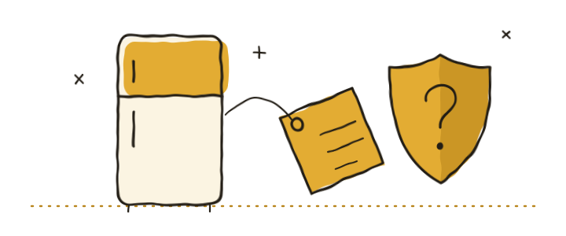

Is an extended warranty worth it in Australia?.

You are at the counter with a new fridge and the salesperson offers three more years of cover for $149. It sounds sensible. Before you say yes, it helps to know what you already have for free.
- You already have consumer guarantees. They are automatic and cost nothing.
- Those rights do not end when the manufacturer's warranty does.
- An extended warranty is optional. Ask what it adds to the rights you already have.
- You do not have to decide at the counter.
What you already have
Under Australian Consumer Law, products come with automatic consumer guarantees. One of them is that a product must be of acceptable quality, which includes lasting a reasonable time for what it is and what it cost. A $2,000 fridge is expected to last longer than a $20 kettle.
These rights are separate from any warranty. The ACCC says they can still apply after a warranty has ended. It has also warned that telling shoppers they need an extended warranty to be covered after 12 months is misleading.
What an extended warranty is
It is a paid, optional contract that promises a repair, a replacement or a refund for a set time after the manufacturer's warranty. It sits on top of your consumer guarantees. It does not replace them, and a shop cannot make you buy one.
Five questions to ask
These follow the ACCC's advice on warranties.
- What does it give me that I do not already have? Ask the seller to list it. If the answer is only "you are covered if it breaks", you may already be.
- What is left out? Accidental damage and water damage are common exclusions.
- What do I get if I claim? Some pay a share of the price that shrinks as the product ages.
- Who pays to send it away? Freight on a washing machine is not small.
- Who do I claim from? It may be an insurer you have never heard of, not the shop.
When one can make sense
- It covers things your rights do not, such as accidental drops or spills.
- It promises something practical you value, such as a loan machine during repairs or a repair at home.
- You have read the terms away from the counter and the price is small beside what a repair would cost you.
If it only repeats what the law already gives you, the money is better kept.
Either way, keep the paperwork
Whether you rely on your consumer guarantees, the manufacturer's warranty or an extended one, you will be asked for proof of purchase. Keep the receipt, and if you do buy extra cover, keep its terms and its end date with it.
Kepto does this in one place. Scan the receipt, set the warranty length, and add the extended warranty under More cover with its own end date and reminder. See How to keep track of warranties.
This is general information, not legal advice. For your own situation, the ACCC and your state's fair trading office can help.
Kepto is free for up to 25 receipts on iPhone and iPad and Android. See how Kepto works.